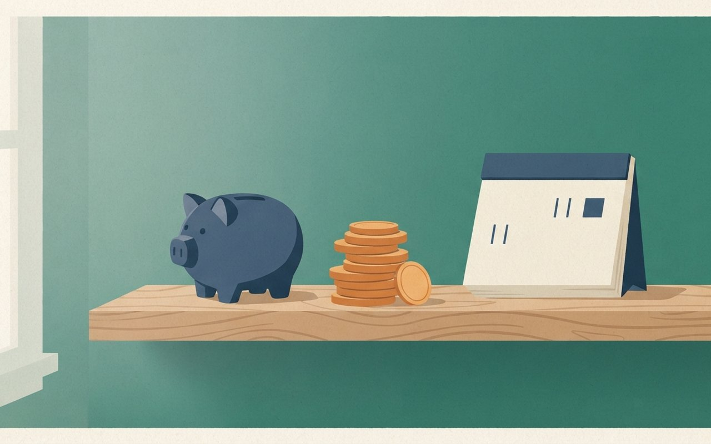

🎧 낭독 원고 보기
11월 17일 화요일, 머니 브리프입니다.
휘발유 리터당 122원 싼 값이 내년 1월 31일까지 이어집니다. 11월 30일 끝날 예정이던 유류세 인하가 두 달 연장돼 휘발유 15%, 경유와 부탄 25% 인하율이 그대로 유지됩니다. 경유는 리터당 145원, 부탄은 51원 효과입니다.
연 4%대 저축은행 정기예금이 두 달 전 13개에서 154개로 늘었습니다. 1년 만기 평균 금리는 13일 기준 3.90%로, 시중은행 최고 우대금리 평균 3.6%보다 높습니다. 은행에서는 9월 신규 기준 6개월 이상 1년 미만 예금 금리가 1년 만기보다 높았고, 9월 말 1년 미만 정기예금 잔액은 470조 원을 넘어 2002년 집계 이래 가장 많았습니다.
10월 은행 가계대출 잔액이 1,203조 9천억 원으로 처음 1,200조 원을 넘었습니다. 한 달에 5조 원 늘었고, 은행 주택담보대출이 3조 4천억 원 늘었습니다. 전 금융권 가계대출도 10월 6조 4천억 원 늘었고, 하나은행은 멈췄던 일부 대출 상품 취급을 다시 시작했습니다.
가상자산 소득 과세를 2027년에서 2029년으로 2년 미루는 데 여야가 잠정 합의했습니다. 네 번째 연기이지만 아직 의결 전이라 최종 결과를 확인해야 합니다. 기본공제 상향, 손실 이월공제, 거래소 자료 제출 시기는 아직 결론이 나지 않았습니다.
5대 은행 신용대출에서 신용점수가 낮은 구간의 평균 금리가 바로 위 구간보다 낮은 역전이 1월부터 9월까지 20건 나왔습니다. 작년 7건의 약 2.9배이고, 은행 자체 평가와 급여이체 같은 우대금리가 반영된 영향으로 풀이됩니다.
이상 머니 브리프였습니다. 금리와 세제는 바뀔 수 있으니 공식 안내를 확인하시고, 정보 제공 목적이며 투자 판단은 본인에게 있습니다.
油
유류세
유류세 인하, 내년 1월 31일까지 두 달 연장 — 휘발유 15%·경유 25% 그대로, 리터당 122원·145원
파이낸셜뉴스·뉴스1(11월 11일)에 따르면 정부는 11월 30일 끝날 예정이던 유류세 인하를 12월 1일부터 2027년 1월 31일까지 두 달 연장하기로 했다. 인하율은 지금과 같은 휘발유 15%, 경유·부탄 25%다.
부가세를 포함한 리터당 인하 효과는 휘발유 122원, 경유 145원, 부탄 51원이다. 시행령 개정안을 국무회의에 올려 시행한다.
- 기간2026년 12월 1일 ~ 2027년 1월 31일(2개월 연장)
- 인하율휘발유 15% · 경유·부탄 25%(현행 유지)
- 리터당 효과휘발유 122원 · 경유 145원 · 부탄 51원(부가세 포함)
- 절차시행령 개정안 국무회의 상정
- 주의⚠ 주유소 판매가는 유가·주유소마다 다름
💰 알고 보면 달라지는 것
인하율이 그대로라 12월 1일에 주유소 가격이 따로 오르지 않는다. 연장이 끝나는 1월 31일 앞뒤가 다음 확인 시점이다. 50리터를 넣는다면 휘발유 기준 인하 효과는 약 6,100원(122원×50, 단순 계산)이다.
파이낸셜뉴스 11/11 — 연장·인하율 뉴스1 11/11 — 리터당 효과
기간·인하율·리터당 122/145/51원은 두 기사 일치(11/11 09시대) · 국무회의 상정은 기사 본문 · 50리터 6,100원은 단순 계산 (확인 2026-11-17)
유류세 인하,
내년 1월 말까지 연장
11월 30일 끝날 예정이던 유류세 인하가 두 달 더 가요. 휘발유 15%, 경유 25% 인하율이 그대로라 리터당 122원과 145원 효과가 이어져요.
휘발유:122|경유:145|부탄:51
~1/31
A quiet gas station at dusk with a single compact car at the pump, winter trees in the background, flat illustration, no people, no text, no numbers, no logos
預
예금 금리
저축은행 연 4%대 예금, 두 달 새 13개→154개 — 1년 평균 3.90%, 은행은 6개월 금리가 1년보다 높다
디지털타임스(11월 15일)·세이프머니(11월 16일)에 따르면 저축은행중앙회 집계 1년 만기 정기예금 평균 금리는 11월 13일 기준 연 3.90%로 두 달 전 3.73%보다 0.17%p 올랐다. 연 4%대 상품은 두 달 전 13개에서 154개로 늘었고, 최고 기본금리는 4.15%다(디지털타임스). 4대 시중은행 12개월 최고 우대금리 평균은 약 3.6%, 새마을금고 평균은 10월 말 3.70%다.
파이낸셜뉴스(11월 15일)가 전한 한국은행 자료로는 9월 말 은행의 만기 1년 미만 정기예금 잔액이 470조 6,103억 원으로 2002년 집계 이래 가장 많았다. 9월 신규 금리는 6개월 이상 1년 미만이 3.74%로 1년 만기 3.57%보다 높았다.
- 저축은행 평균1년 만기 3.90%(11/13 기준) · 두 달 전 3.73%
- 4%대 상품13개 → 154개 · 최고 기본금리 4.15%
- 비교시중은행 최고 우대 평균 약 3.6% · 새마을금고 3.70%
- 단기예금1년 미만 잔액 470조 6,103억 원(9월 말, 역대 최대)
- 금리 역전6개월~1년 미만 3.74% · 1년 만기 3.57%(9월 신규)
- 주의⚠ 금리 변동 가능 · 가입 전 비교 공시 확인
💰 알고 보면 달라지는 것
금리가 더 오를 것이란 기대에 짧게 맡기는 돈이 늘었다. 저축은행 예금도 1인당 원금과 이자를 합쳐 예금자보호 한도 안에서 나눠 맡기는 것이 기본이다. 상품 금리는 수시로 바뀌니 가입 직전에 저축은행중앙회 비교 공시로 확인하자.
디지털타임스 11/15 — 저축은행 금리 세이프머니 11/16 — 4%대 상품 수 파이낸셜뉴스 11/15 — 단기예금
평균 3.90%·3.73%·13→154개·시중은행 3.6%·새마을금고 3.70%는 디지털타임스·세이프머니 일치 · 최고 4.15%는 디지털타임스 · 470조·3.74%/3.57%는 파이낸셜뉴스(뉴시스 기사, 한국은행 자료) · 특정 상품은 소개하지 않음 · ⚠ 금리 변동 가능 (확인 2026-11-17)
저축은행 4%대 예금,
두 달 새 154개로
저축은행 1년 예금 평균이 13일 기준 3.90%로 올랐어요. 연 4%대 상품은 두 달 전 13개에서 154개가 됐어요. 금리는 수시로 바뀌어요.
시중은행 최고 우대 평균:3.6|새마을금고 평균:3.70|저축은행 평균:3.90
4.15%|저축은행 최고 기본금리(11/13)
A small ceramic piggy bank beside a stack of coins and a desk calendar on a wooden shelf, soft morning light, flat illustration, no people, no text, no numbers, no logos

貸
10월 은행권
은행 가계대출 처음 1,200조 돌파 — 10월 한 달 5조 늘어, 하나은행은 일부 대출 다시 열어
서울신문(11월 12일)·아주경제(11월 11일)에 따르면 10월 말 은행 가계대출 잔액은 1,203조 9천억 원으로 한 달 새 5조 원 늘어 처음 1,200조 원을 넘었다. 은행 주택담보대출이 3조 4천억 원 늘었다(서울신문). 전 금융권 가계대출은 9월 2조 2천억 원 줄었다가 10월 6조 4천억 원 늘었다(아주경제).
아주경제에 따르면 하나은행은 11월 2일부터 비대면 주담대 일부와 갈아타기 상품 신규 취급을 다시 시작했고, 신한은행은 내년 1월 실행분부터 '방공제 없는 주담대'를 다시 취급하는 방안을 추진 중이다(확정 전). 금융당국은 8월 연간 증가율 목표를 1.5%에서 3.0%로 올렸다.
- 은행 가계대출1,203조 9천억 원(10월 말) · 한 달 +5조 원
- 은행 주담대+3조 4천억 원(서울신문)
- 전 금융권9월 −2조 2천억 원 → 10월 +6조 4천억 원
- 은행 움직임하나 11/2 일부 상품 재개 · 신한 1월 재취급 추진(미확정)
- 관리 목표연간 증가율 1.5% → 3.0%(8월 상향)
💰 알고 보면 달라지는 것
연말이면 은행이 대출을 조이는 '대출절벽'이 반복됐지만, 올해는 목표를 높여 하나은행이 일부 상품을 다시 열었고 신한은행도 재취급을 추진 중이다. 다만 은행마다 남은 한도가 달라 같은 상품도 은행별로 접수 여부가 다를 수 있다. 연내 대출이 필요하다면 여러 은행 앱에서 취급 여부부터 확인하자.
서울신문 11/12 — 1,200조 돌파 아주경제 11/11 — 은행 재개·전 금융권
잔액 1,203조 9천억·+5조는 두 기사 · 은행 주담대 +3조 4천억은 서울신문(아주경제는 전 금융권 주담대 +4조) · 전 금융권 −2.2조/+6.4조·하나·신한·목표 3.0%는 아주경제 · 일부 매체는 5대 은행이 연간 목표를 넘었다고 보도해 은행별 여력은 다름 · 금리(코픽스)는 오늘 메인 브리프에서 다룸 (확인 2026-11-17)
은행 가계대출,
처음 1,200조 넘었다
10월 은행 가계대출이 한 달 새 5조 원 늘어 처음 1,200조 원을 넘었어요. 하나은행은 멈췄던 일부 대출 상품을 다시 열었어요.
8월 목표 3.0%|10월 잔액 1,203조|11/2 하나 재개|1월 신한 추진
+5조 원|10월 은행 가계대출 증가
A row of house-shaped paper models on a desk next to a closed laptop and a cup of coffee, calm afternoon light, flat illustration, no people, no text, no numbers, no logos
稅
국회 조세소위
가상자산 과세, 2029년으로 2년 유예 잠정 합의 — 네 번째 연기, 소득세법은 아직 의결 전
한국경제·뉴스1(11월 11일)에 따르면 국회 재정경제기획위원회 조세소위에서 여야가 가상자산 소득 과세를 2027년에서 2029년으로 2년 유예하기로 잠정 합의했다. 원래 2022년 시행 예정이었다가 2023년, 2025년, 2027년으로 미뤄져 이번이 네 번째 연기다(한국경제).
소득세법 개정안은 이날 의결되지 않았고 조세소위 마지막 날 최종 의결할 방침이다. 기본공제 상향·손실 이월공제·거래소 자료 제출 시기는 결론이 나지 않았다.
- 합의2027년 → 2029년 2년 유예(잠정, 11/11 조세소위)
- 연기 이력2022 → 2023 → 2025 → 2027 → 2029(잠정)
- 상태소득세법 개정안 의결 전 · 조세소위 마지막 날 의결 방침
- 남은 쟁점기본공제 상향 · 손실 이월공제 · 거래소 자료 제출 시기
💰 알고 보면 달라지는 것
잠정 합의는 법이 바뀐 것이 아니다. 조세소위 의결과 본회의 통과를 거쳐야 확정된다. 지금 세금 때문에 서둘러 사고팔 이유가 생긴 것은 아니고, 이 카드는 투자 권유가 아니다.
한국경제 11/11 — 잠정 합의·연기 이력 뉴스1 11/11 — 남은 쟁점
2029년 2년 유예 잠정 합의는 두 기사 일치 · 의결 전·마지막 날 의결 방침·연기 이력(2022→2023→2025→2027)은 한국경제 · 손실 이월공제 미결은 뉴스1 · 기본공제·거래소 자료는 두 기사 · 11/16~17 최종 의결 여부는 확인 못 함 · 기본공제 금액·세율은 두 기사에 없음 (확인 2026-11-17)
가상자산 과세,
2029년으로 또 미룬다
여야가 가상자산 소득 과세를 2027년에서 2029년으로 2년 미루기로 잠정 합의했어요. 네 번째 연기지만 아직 법안 의결 전이에요.
2022 첫 예정|2023 예정|2025 예정|2027 예정|2029 잠정
2년|추가 유예(잠정)
An hourglass on a wooden desk beside a wall calendar with blank pages turning, calm evening light, flat illustration, no people, no text, no numbers, no logos, no coins
信
신용대출
신용점수 낮은 구간 금리가 더 낮다? 5대 은행 '금리 역전' 20건 — 작년 7건의 약 2.9배
아주경제(11월 17일)에 따르면 KB국민·신한·하나·우리·NH농협의 1~9월 신용대출을 신용점수 구간별로 보면, 낮은 구간의 평균 금리가 한 단계 위 구간보다 낮은 역전이 20건으로 작년 같은 기간 7건의 약 2.9배였다. 대출 건수가 아니라 구간끼리 비교한 결과를 센 숫자다.
은행이 소득·직업·급여이체 같은 자체 평가와 우대금리를 반영하고, 서민·우대상품 비중이 커진 데다 취급이 적은 구간은 평균이 크게 흔들리기 때문이라고 아주경제는 설명했다. 중·저신용자 대출 조건이 전반적으로 좋아졌다는 뜻은 아니다. 파이낸셜뉴스(11월 9일)에 따르면 농협은행은 통신·공과금 같은 대안정보로 평가하는 모형을 도입했다.
- 대상5대 은행 신용대출 · 1~9월
- 금리 역전20건(작년 같은 기간 7건, 약 2.9배)
- 세는 법대출 건수 아님 · 신용점수 구간 간 비교 결과
- 이유은행 자체 평가·우대금리 · 서민상품 비중 · 소수 구간 평균 변동
- 대안 평가농협은행 통신·공과금 정보 활용 모형 도입(11/9 보도)
💰 알고 보면 달라지는 것
신용점수만으로 금리가 정해지지 않는다는 뜻이다. 대출을 알아볼 때는 점수표보다 내 급여이체·자동이체 실적이 있는 은행에서 우대금리가 붙는지 먼저 물어보는 편이 실속 있다.
아주경제 11/17 — 금리 역전 20건 파이낸셜뉴스 11/9 — 대안신용평가
20건·7건·2.9배·세는 법·이유는 아주경제(11/17 06:00) 단일 출처 · 농협 대안정보 모형은 파이낸셜뉴스(11/9) · 은행별·구간별 금리 숫자는 본문에 없음 (확인 2026-11-17)
신용점수 낮은데
금리도 낮은 '역전'
5대 은행 신용대출에서 점수가 낮은 구간 금리가 더 낮은 역전이 20건 나왔어요. 은행 자체 평가와 급여이체 같은 우대금리가 반영된 결과로 풀이돼요.
작년 1~9월 7건|금리 역전|올해 1~9월 20건
작년의 약 2.9배 · 신용점수 구간끼리 비교한 수
A simple bank counter with a pen, a small stack of blank papers and a smartphone on a tray, warm indoor light, flat illustration, no people, no text, no numbers, no logos